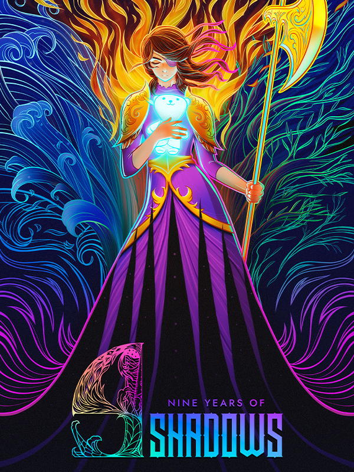

9 Years of Shadows
Details
|  | |
| Playtime | Not Played |
| Last Activity | Never |
| Added | 16/09/2024 23:34:26 |
| Modified | 18/05/2025 1:31:32 |
| Completion Status | Not Played |
| Library | Gog |
| Source | GOG |
| Platform | PC (Windows) |
| Release Date | 27/03/2023 |
| Community Score | 79 |
| Critic Score | |
| User Score | |
| Genre | Adventure Indie Platform Role-playing (RPG) |
| Developer | Halberd Studios |
| Publisher | Freedom Games |
| Feature | Single Player |
| Links | Steam Official Discord Epic Twitch GOG |
| Tag | 2D Action Adventure Atmospheric Exploration Fantasy Female Protagonist Indie Magic Metroidvania Pixel Graphics Platformer Story Rich |
Description

A fateful night of sorrow and ancient magic changed the life of a young child forever, and with it, everything else as mankind knew it. For 9 long years, the world has been submerged in the deepest of shadows, robbing every object and living creature of their color, their joy, and most importantly, hope.
Many brave souls have tried to venture inside the corrupting depths of Talos Castle, a long-abandoned orphanage from which the curse stemmed. All have failed, except for one. Armed with little other than her halberd and sheer nerve, Europa’s daunting quest is clear: enter the castle, find the source of darkness, and return color to the lands before it is too late.

However, this adventure is not for Europa to face alone. In her most desperate hour, Europa encounters Apino, a cute magical bear with the ability to heal, cleanse the corruption and protect his allies.
While exploring the castle, Apino can shoot powerful projectiles at enemies, open locked doors and shield Europa from ranged attacks.

Enhance your battle prowess by acquiring elemental armors. Master the might of lightning, water, earth and fire to defeat a vast assortment of enemies.
Use the elements to your advantage to travel the map dynamically, surprise bosses while you change armors on the fly and perform strong combos. Obtain special abilities to swim against waterfalls, travel underground tunnels or glide through warm air currents to access hidden locations and uncover their secrets.

Meet enigmatic composers that will aid you in your mission. With the special appearance of Michiru Yamane and Norihiko Hibino, both as NPCs and composers of several tracks tuned to 432hz, a soothing frequency used in what’s known as healing music. And there is more to music than meets the eye. Hidden bosses with musical attack patterns lurk in the shadows ready to strike. In fact, music is the binding thread that brings gameplay and storytelling together; from collecting musical notes, to performing a healing lullaby to restore your health, music is all but the soul of the game.